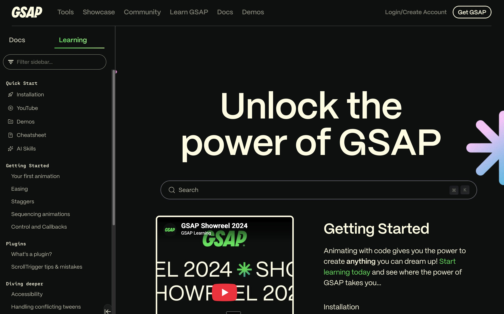

We have spent the last five weeks planning your story. Today we start building it, and start learning GSAP. We will piece together the structure of your story on the page, using grey boxes for now. Later in the session we will recap Figma and start creating the graphics that will fill those boxes.
Session at a glance
Break
Also on this page: If you get stuck · Resources
Part one
Creating your skeleton page
In the first three weeks, you created the start of your scrolling page on GitHub. In each of those weeks, we added a small piece of content whilst we got used to learning how to commit changes and push those up to GitHub. This week, we are going to start adding in the real content that will form your page. This starts by looking at your storyboard and using this as a blueprint for creating all of the sections to the page.
Work from your storyboard, not your beat sheet. Every frame on it is one beat.

-
Chapter 1 · the corner · held picture
- beat-01-today 1 screen
- beat-02-1905 2 screens
-
Chapter 2 · the closing
- beat-03-queue 1 screen
- beat-04-closures 1 screen
- beat-05-notice 2 screens
-
Chapter 3 · inside
- beat-06-refit 1 screen
- beat-07-then-now 1 screen · the interaction
-
Chapter 4 · outside
- beat-08-outside 1 screen
- Your storyboard Beat 02-1905
- Your page id="beat-02-1905"
- Your Figma frame beat-02-1905
Get your page back
Your page is on GitHub. Before you change anything, open it in VS Code.
On a lab Mac, or any computer it is not on yet, clone it: download a full working copy from GitHub.
- Open VS Code with no folder open. If one is open, choose File, Close Folder.
- Click Clone Repository in the Explorer panel, then Clone from GitHub. Sign in to GitHub if it asks.
- Pick your website's repository from the list.
- Choose the Desktop as the place to put it. When VS Code asks, click Open.
Every step with screenshots: Sitting at a new Mac, in the GitHub guide.
On your own laptop, where it already is, choose File, Open Folder and pick your website folder. Then click Sync Changes in Source Control, so you have the latest version.
Start again with a clean page
Everything in your index.html and
style.css so far was practice: the starter's chapter,
the Week 2 side-by-side and held picture, the Week 3 full-screen
video. It was dummy content for learning the moves. Now you have your
own storyboard, clear both files and start again.
-
Open
index.html, select everything (Cmd-A) and delete it. Copy in theindex.htmlbelow. -
Do the same with
css/style.css, using thestyle.cssbelow. -
Leave
js/main.jsand yourimagesfolder as they are.
Same repository, not a new one
Clear the files, not the project. Its history of commits is your record that the work is yours.
How to structure your page
Your HTML follows the four rules: chapters inside
<main>, beats inside chapters, a held picture first
in its chapter, cover and credits outside the chapters. Here are both
files for the bank story, in full. Copy them in, then replace the
bank's chapters, beats and names with yours.
index.html
<!DOCTYPE html>
<html lang="en-GB">
<head>
<meta charset="utf-8">
<meta name="viewport" content="width=device-width, initial-scale=1">
<title>Your title here</title>
<!-- Your Google Font. Swap these for the font you chose. -->
<link rel="preconnect" href="https://fonts.googleapis.com">
<link rel="preconnect" href="https://fonts.gstatic.com" crossorigin>
<link href="https://fonts.googleapis.com/css2?family=Inter:wght@400;700&display=swap" rel="stylesheet">
<link rel="stylesheet" href="css/style.css">
</head>
<body>
<main>
<!-- Chapter 1: the corner. Beats 01 and 02 share one held picture.
Beat 01 is also the cover, so this page has no <header>. -->
<section class="chapter" id="chapter-1-the-corner">
<div class="held">
<img src="images/scene-01.svg" alt="The bar today.">
</div>
<div class="beat" id="beat-01-today">
<h1>This was a bank for 120 years</h1>
</div>
<div class="beat" id="beat-02-1905">
<p>1905. Built as a bank.</p>
</div>
</section>
<!-- Chapter 2: the closing. Three beats, each with its own picture -->
<section class="chapter" id="chapter-2-the-closing">
<div class="beat" id="beat-03-queue">
<h2>The queue</h2>
</div>
<div class="beat" id="beat-04-closures">
<h2>Closures</h2>
</div>
<div class="beat" id="beat-05-notice">
<h2>The notice</h2>
</div>
</section>
<!-- Chapter 3: inside. Beat 07 is the interaction -->
<section class="chapter" id="chapter-3-inside">
<div class="beat" id="beat-06-refit">
<h2>The refit</h2>
</div>
<div class="beat" id="beat-07-then-now">
<!-- INTERACTION: before/after slider -->
<h2>Then and now</h2>
</div>
</section>
<!-- Chapter 4: outside -->
<section class="chapter" id="chapter-4-outside">
<div class="beat" id="beat-08-outside">
<h2>Outside</h2>
</div>
</section>
</main>
<!-- Credits belong to the whole page, so they sit outside the chapters -->
<footer>
<h2>Sources and credits</h2>
<ul>
<li>Every source and every picture: who, what, where, licence.</li>
</ul>
</footer>
<script src="js/main.js"></script>
</body>
</html>css/style.css
/* COLOURS: placeholders. Change them to your own palette. */
:root {
--ink: #1a1a1a; /* text */
--paper: #ffffff; /* page background */
--accent: #c0392b; /* links, and anything you want to stand out */
}
/* BASICS */
* {
box-sizing: border-box; /* padding counts inside the width */
}
body {
margin: 0;
font-family: "Inter", sans-serif; /* the Google Font in index.html */
font-size: 1.125rem;
line-height: 1.6;
color: var(--ink);
background: var(--paper);
}
img {
display: block;
max-width: 100%; /* never wider than the screen */
height: auto;
}
a {
color: var(--accent);
}
h1 {
margin: 0;
font-size: 3rem;
line-height: 1.1;
}
/* SKELETON PAGE */
.chapter {
border-bottom: 3px solid var(--ink); /* where each chapter ends */
}
.beat {
position: relative; /* in front of a held picture */
min-height: 100svh; /* one screen per beat until proven otherwise */
border-bottom: 1px dashed var(--ink); /* where each beat ends */
}
.beat,
footer {
max-width: 40rem; /* keeps lines of text short */
margin: 0 auto; /* centres the block */
padding: 4rem 2rem;
}
/* A HELD PICTURE: stays in place while its chapter's beats scroll past */
.held {
position: sticky;
top: 0;
height: 100svh;
display: flex;
align-items: center;
justify-content: center;
}
/* BEAT HEIGHTS: only the beats that need more than one screen */
#beat-05-notice { min-height: 200svh; } /* beat 05 holds for a second screen */
/* YOUR STYLES: your layouts and design go below this line */
The bank's first beat is its cover, so it needs no
<header>. If your cover stands on its own, add a
<header> just above <main>: it
belongs to the whole page, so it sits outside the chapters (rule 4).
Task 1 · 35 minutes · on your own project
Build your skeleton page
- Get your page back: clone it, or open it and sync.
- Clear
index.htmlandstyle.cssand copy in the two files above. - Group your storyboard frames into chapters: the big sections of your story. Write each frame's chapter on it.
-
For each chapter, a
<section class="chapter">with an id. Inside it, a<div class="beat">for each frame, with the frame's name as its id and its line of text. -
Hatched frames: put
<div class="held">first in their chapter. -
Set each beat's height in
svh. Scroll at reading speed. Adjust until it feels right. -
Mark your interaction moment:
<!-- INTERACTION: before/after slider --> - Check it at phone width, then commit as skeleton page and sync.
Part two
Intro to GSAP
GSAP is a free JavaScript library for animating anything on a web page. Its ScrollTrigger plugin ties that animation to the reader's scroll.
What GSAP can do
In a story, it puts you in charge of timing. A photo fades in as the reader reaches it, a line draws as they scroll, a picture holds while the words move past. Your storyboard says what changes in each beat; GSAP makes it change.

Link GSAP to your page
Two script tags load GSAP and ScrollTrigger. They go above your own, so GSAP is ready before your code runs.
index.html, above your own script tag
<script src="https://cdn.jsdelivr.net/npm/gsap@3.15.0/dist/gsap.min.js"></script>
<script src="https://cdn.jsdelivr.net/npm/gsap@3.15.0/dist/ScrollTrigger.min.js"></script>
<script src="js/main.js"></script>
Reload, open the console and type gsap. If it says
gsap is not defined, check the two tags.
Switch on ScrollTrigger
One line, at the very top of main.js.
js/main.js
gsap.registerPlugin(ScrollTrigger);Make something move
js/main.js, under that line
gsap.from(".beat h2", {
opacity: 0,
y: 40, // starts 40px lower than its resting place
duration: 0.8, // seconds
ease: "power2.out" // arrives fast, settles gently
});
Reload. gsap.from() starts each heading from these values
and ends it wherever your CSS already puts it. If the script never
runs, the heading is simply there, so never set
opacity: 0 in your CSS.
Now scroll down. The other headings have already played, while no one was looking.
Wait for the reader
Give every heading its own trigger, so each one waits until the reader reaches it.
js/main.js, replacing the block above
gsap.utils.toArray(".beat h2").forEach(function (heading) {
gsap.from(heading, {
opacity: 0,
y: 40,
duration: 0.8,
ease: "power2.out",
scrollTrigger: {
trigger: heading,
start: "top 80%", // the heading's top meets 80% down the screen
markers: true // DELETE BEFORE YOU PUBLISH
}
});
});Why start has two values
start tells ScrollTrigger when to begin. To do that it
needs two pieces of information: which part of the heading to watch,
and how far up the screen that part has to travel. So it always takes
two values, in that order: first the heading, then the screen.
The first value, top, is a place on the
heading: its top edge. This point belongs to the heading, so
it moves.
The second value, 80%, is a place on the
screen: a line 80% of the way down from the top of the
browser window. It belongs to the screen, not the page, so it never
moves: the page scrolls past it. GSAP's scroller-start
line shows where it is.
The animation starts at the moment the first reaches the second: when
the top of the heading has scrolled up to 80% of the way down the
screen. With markers: true you can watch it happen. The
start marker rides up with the heading until it touches
the scroller-start line, which stays still. GSAP draws
both in green; in the diagram I have made the heading's marker blue
so you can tell them apart.
end works in exactly the same way, with red markers:
end: "top 40%" means "finish when the top of the heading
reaches 40% of the way down the screen". You will use it further down
this page.
| Value | First value: on the heading | Second value: on the screen |
|---|---|---|
top |
its top edge | the top of the screen |
center |
its middle | halfway down the screen |
bottom |
its bottom edge | the bottom of the screen |
80% |
80% of the way down the heading | 80% of the way down the screen |
So "center center" starts when the middle of the heading
reaches the middle of the screen, and "top bottom"
starts as soon as the top of the heading appears at the bottom of the
screen. "top bottom" is what GSAP uses if you leave
start out. GSAP spells center the American
way: centre will not work.
Now scroll your page and watch the markers.
See it working: I have made three ScrollTrigger demos: arrive, scrub, and one where you change both values and watch the markers move. Download them and read the code in VS Code.
Let the reader drive it
That plays once. Add two lines and the scroll drives it instead: stop, and it stops; scroll back, and it goes back.
js/main.js, inside the scrollTrigger
start: "top 80%",
end: "top 40%", // the animation finishes here
scrub: true, // the scroll position drives it
start: "top 80%",
// no end, so GSAP uses "bottom top"start is on the heading's
top, scroller-start 80% down the screen. With no
end, the end marker is on the heading's
bottom and scroller-end at the top of the screen.
Once start passes scroller-start, the
heading plays to the end on its own.

start: "top 80%",
end: "top 40%",
scrub: true,top, so
start and end sit together on the
heading's top edge. scroller-end has moved up to
40%. The heading only moves while its top travels from 80% up to
40% of the screen.
Task 2 · 10 minutes · on your own project
Arrive, or follow the hand?
- Add
endandscrub. Scroll slowly, then back. - For each frame on your storyboard, decide which it needs. The bank story has no scrub at all.
-
Set
markers: false. Commit as first motion and sync.
Learn GSAP in your own time
Class gets you started. The rest is practice: work through these between sessions.

-
ScrollTrigger demos
Arrive, scrub, and try the values with the markers on.
-
GSAP learning
Guides, videos and courses, all in one place.
-
Getting started
Your first animation, then easing, staggers and timelines.
-
ScrollTrigger
start,end,scrubandmarkers. -
ScrollTrigger tips and mistakes
When something does not fire where you expect.
-
GreenSock Learning
GSAP's own videos, including today's ScrollTrigger one.
-
GSAP Express
34 short video lessons on the basics. Free, but you sign up.
Break
Part three
Figma: filling the boxes
A quick recap of Figma, then you start designing what fills the boxes. Figma also keeps a version history of your file: a record that the work is yours, from the day the file exists.

Or your history is gone by January
- Education plan. Without it, Figma keeps 30 days. Not sure you have it? Apply at figma.com/education now; it is not instant.
- Not in Drafts. Drafts keep 30 days too. Use your Interaction Design project.
chapter-1-the-corner
chapter-2-the-closing
Task 3 · 25 minutes · on your own
Set up your Figma file
- Make the file. In your Interaction Design project, not Drafts, make a new design file. Name it with your name.
- Make one screen. Press F and draw a frame. In the right-hand panel, set W to 1440 and H to 900: one laptop screen, the same unit as your skeleton page.
- Add a layout guide. With the frame selected, click Add layout guide in the right-hand panel. Change it to Columns: count 12, type Stretch, margin 80, gutter 24. It keeps text and pictures lined up from beat to beat.
-
Make your colours. Click the empty canvas, then
Open variables under Local variables. Create
three colour variables, ink,
paper and accent, with the same
values as the variables in your
style.css. Fill the frame with paper. - Pick your font. Use the Google Font from your page. Figma has Google Fonts built in.
-
One frame per beat. Name the frame after your
first beat,
beat-01-today, then ⌘ D (Windows: Ctrl D) to copy it for every beat. Rename each copy and stack them top to bottom, in reading order. -
A section for each chapter. Select a
chapter's frames, right-click, Wrap in new
section. Double-click its title and name it after the
chapter:
chapter-1-the-corner. - Notes beside each frame. Text (T) to the right: trigger, change, how it moves, reader can, why.
-
Pictures. Drag them in from your project's
imagesfolder. A frame crops anything that hangs over its edge. Name each picture layer after its file:1905.jpg.
Task 4 · 5 minutes · on your own
Save a version and share it with me
- ⌘ Option S (Windows: Ctrl Alt S), or File, Save to version history. Title: Week 7 set-up.
- Share: invite a.m.pearson@leedsbeckett.ac.uk as can edit. Figma only shows earlier versions to editors. I will not change anything.
- Save a named version at the end of every sitting.
Task 5 · the rest of the session · on your own
Start the graphics
Pick the beat your story turns on and design what fills its box: the type, the pictures, the colour. Then the next one.
When a picture is ready for the page: select it, then
Export at the bottom of the right-hand panel. JPG
for photos, SVG for flat shapes. Save it into your project's
images folder.
Part four
Before you go
- skeleton page and first motion committed and synced.
- Figma file in your project, shared with me, one named version.
- Any AI use today is in your AI-use log.
Before the next session: a Figma frame for every beat, with its notes.
If you get stuck
My storyboard was not finished
Use your beat sheet for the frames you have not drawn: each row is one beat. Draw the missing frames straight into Figma.
My skeleton page looks terrible
It should. Judge it on order and pacing only.
Nothing moves
Red in the console? GSAP script tags above main.js?
Any .beat h2 on the page?
Figma has not confirmed my education plan
Carry on as normal and tell me. Figma says the full history appears once the plan does.
Something else
Ask in the class, or email a.m.pearson@leedsbeckett.ac.uk.